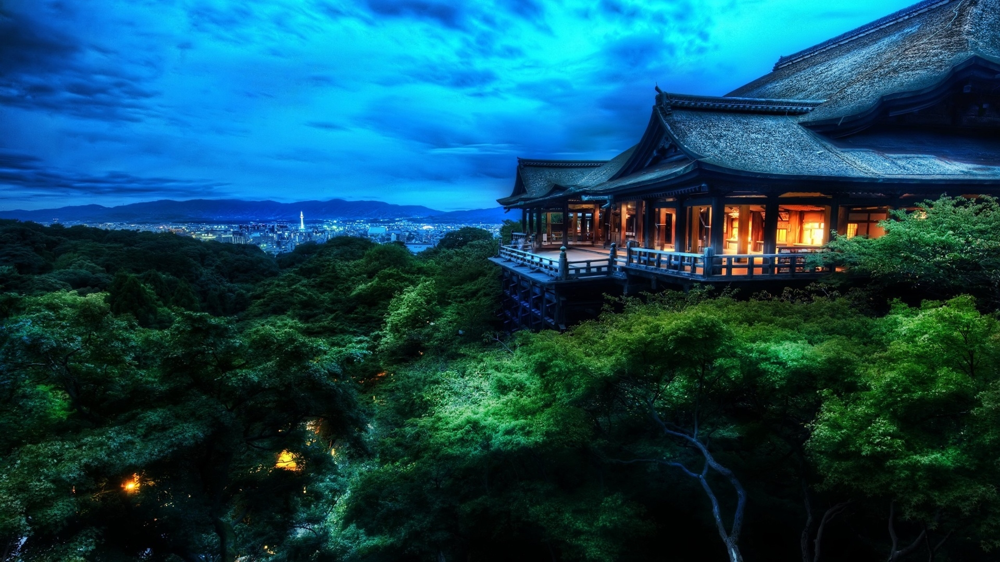

EN
-
Make
memories in
Kyoto, which
has a tradition.
Osaka Castle
Observation Deck, from 50 meters above the ground
where you can enjoy a panoramic view of the Osaka Castle

- 
Observation Deck, from 50 meters above the ground
where you can enjoy a panoramic view of the Osaka Castle


—with some history and culture peeking through
Bright, gaudy and playful: KYOTO provides ample amusement with little pretension

Fushimi Inari-taisha is the head shrine of the kami Inari, located in Fushimi-ku, Kyoto, Kyoto Prefecture, Japan. The shrine sits at the base of a mountain also named Inari which is 233 metres (764 ft) above sea level, and includes trails up the mountain to many smaller shrines which span 4 kilometres (2.5 mi) and take approximately 2 hours to walk up.
Inari was originally and remains primarily the kami of rice and agriculture, but merchants and manufacturers also worship Inari as the patron of business[citation needed]. Each of Fushimi Inari-taisha's roughly thousand torii was donated by a Japanese business.

Kiyomizu-dera is a Buddhist temple located in eastern Kyoto, Japan. The temple is part of the Historic Monuments of Ancient Kyoto (Kyoto, Uji and Otsu Cities) UNESCO World Heritage site.
The temple was covered entirely by semi-transparent scaffolding while undergoing restoration works in preparation for the 2020 Olympics. Kiyomizu-dera was founded in the early Heian period.[2] The temple was founded in 778 by Sakanoue no Tamuramaro, and its present buildings were constructed in 1633, ordered by Tokugawa Iemitsu.

Take a break in the recently redeveloped Tennoji Park .
On weekends, the lawns fill with happy young families
picnicking and playing in the park, which is overshadowed
by the massive Harukas Tower next door. This is the
perfect place to get a sense of the surrounding
geography before you depart for your next adventure.
Aside from being the oldest official temple in Japan,
Shitennoji Temple boasts a five-storyed pagoda, unique
architecture, and many seasonal festivities.


Kinkaku-ji , officially named Rokuon-ji , is a Zen Buddhist temple in Kyoto, Japan. It is one of the most popular buildings in Kyoto, attracting many visitors annually. It is designated as a National Special Historic Site, a National Special Landscape and is one of 17 locations making up the Historic Monuments of Ancient Kyoto which are World Heritage Sites.
Ginkaku-ji (lit. "Temple of the Silver Pavilion"), officially named Jishō-ji ( lit. "Temple of Shining Mercy"), is a Zen temple in the Sakyo ward of Kyoto, Japan. It is one of the constructions that represents the Higashiyama Culture of the Muromachi period.


The Gion Festival takes place annually during the month of July in Kyoto and is one of the most famous and largest festivals in Japan. It is formally part of Japan's indigenous, nature-based Shinto faith, and its original purposes were purification and pacification of disease-causing entities. There are many ceremonies held during the festival, but it is best known for its two Yamaboko Junkō processions of floats, which take place on July 17 and 24.